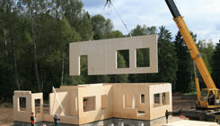

Капитальное строительство.
Капитальное строительство — вид строительства, предполагающий возведение на прочном фундаменте объектов недвижимости различного назначения (жилых, промышленных и административных). Процесс капитального строительства представляет собой комплекс работ от разработки проектной документации и получения разрешительных документов до сдачи объекта в эксплуатацию.
Материал стен капитальных домов:
Дома из кирпича
Проекты коттеджей из кирпича достаточно надежны, так как кирпич мало подвержен высоким температурам потому что изготавливается в печах путем обжига. Кирпич невосприимчив к различным факторам окружающей среды. Он не теряет крепости и не меняет форму от перепада температур, дождей и прочих явлений капризной природы. Строительство кирпичного дома - прекрасный вариант, ведь кирпич предоставляет широчайшие архитектурные возможности благодаря небольшому размеру. C кирпичом вы можно смело реализовать любые дизайнерские фантазии, даже очень сложные или необычные. Взять, к примеру, круговые построения, или, скажем, арки.
Дома из пеноблока
Пеноблок - легкий блок из вспененного бетона естественной сушки. Имеет не идеальную геометрию с большими допусками. Монтируется с использованием цементного раствора, сетки и арматуры. Требует обязательного дополнительного утепления с внешней стороны, для предотвращения мостов холода. Требует монтажа выравнивающей штукатурки под шпаклевку.
Пенобетон получают в результате смешивания бетона со специальной пеной. Для изготовления одного кубометра пенобетона требуется всего лишь 400 килограмм песчано-цементной смеси в соотношении один к одному, три килограмма пенообразующей добавки и вода. Такой простой состав делает этот материал очень доступным к применению.
Пеноблок получается легкий, но не достаточно ровный и по этому монтируются на цементный раствор. В сравнении с ним газосиликатные блоки несколько дороже пенобетонных блоков, однако они и лучше на сумму разницы в цене.
Другой важный фактор, обеспечивающий популярность пенобетона при строительстве домов, это его замечательные теплоизоляционные свойства и уникальная звукоизоляция. Эти качества строительного материала позволяют значительно уменьшить толщину ограждающих конструкций. Следует отметить способность пенобетона к сопротивлению паро и влагопроницаемости. Однако из-за ячеистой структуры этого материала его нельзя применять для возведения стен подвалов, погребов, поземных гаражей и других подобных строений.
В ходе строительства дома пеноблоки легко распиливаются и обрабатываются. Получаемые с их применением поверхности стен являются отличной основой почти для любых видов декоративной отделки.Так же при строительстве домов более 2х этажей в конструкцию стен можно достаточно легко заложить колонны, для увеличения несущей способности стен первого этажа. Все эти свойства пенобетона как строительного материала делают его очень популярным в современном строительстве домов и коттеджей. Особенно повысился спрос на этом материал в результате повсеместного внедрения монолитно-каркасного способа возведения зданий. Эта технология позволила использовать енобетон при многоэтажном строительстве домов. Пенобетонная стена толщиной 30 сантиметров по своим теплоизолирующим свойствам соответствует полутораметровой кирпичной стене. А это делает такое строительство домов очень экономичным.
Дома из теплой керамики
Этот строительный материал представляет собой обыкновенный кирпич, но изготовленный с применением новейших технологий и экологически чистых материалов. Строительство дома из теплой керамики – превосходная альтернатива кирпичному зданию.
«Теплая керамика» – это обыкновенный пустотелый кирпич, но с большим количеством пустот внутри и с большими линейными размерами. Из-за больших размеров снижается время возведения стен, а чем быстрее строится дом, тем больше Вы экономите на трудозатратах. Например, чтобы выложить из «теплой керамики» такую же стену как из 100 кирпичей, Вам понадобится всего лишь 10 блоков.
Блоки содержат очень много воздушных полостей внутри, что значительно уменьшает теплопроводность материала и делает Ваш дом всегда теплым и комфортным внутри, обладает хорошей звукоизоляцией, а так же не дает большой нагрузки на фундамент, а это приводит к наименьшей стоимости постройки фундамента.
Система крепления «паз-гребень» отлично экономит раствор, так как требуются только горизонтальные швы при возведении.
Дома из газобетона
Газобетон – сверхлегкий бетонный блок из вспененного бетона автоклавной сушки, с минимальным геометрическим отклонением, готовый под отделку шпаклевкой. Монтируется на специальный клей с прокладкой пластиковой сетки и арматуры, что позволяет избежать эффекта мостов холода, и придает прочность кирпичного дома,экологичный и легкий при эксплуатации.
Газобетонные блоки можно использовать в качестве материала для кладки несущих стен, перегородок, кладки внутренних стен и стенового заполнения. Блоки этого материала имеют маленький удельный вес, по сравнению с самым распространённым строительными материалом – кирпичом. Объемный вес блока колеблется от 400 до 800 кг/м3. При кладке газобетона один блок, весящий 20 кг, занимает столько же места, сколько 24 кирпича весом около 100 кг. Маленький вес блоков не требует дополнительных затрат на оборудование для подъема материала на необходимую высоту.
Строительство из газобетона очень удобно, ведь газобетонные блоки легко обрабатываются любым режущим и пилящим инструментом. Это очень удобно, если Вы решили построить дом по индивидуальному проекту.
Газобетон неорганический материал, и не подвержен старению и гниению. Из-за своих пор газобетонная кладка пропускает воздух и в помещении «легко дышится». Природное минеральное сырье, входящее в состав газобетона, не горит, что исключает возможность возгорания. Газобетонная кладка выдерживает воздействие открытого пламени в течение 3-8 часов, что в свою очередь спасает металлические конструкции от воздействия высоких температур. Благодаря своим эксплуатационным параметрам газобетон очень хорошо переносит низкие температуры – очень морозостоек. При соблюдении всех аспектов в строительстве дома материал способен пережить 200 циклов «заморозки-разморозки», что весьма актуально для возведения зданий в условиях сурового северного климата.
Во многих строительных источниках утверждается, что штукатурить фасад не обязательно, что газобетон способен простоять в таком виде до 60-70 лет. В эстетических целях все же рекомендуется их оштукатуривать или облицовывать кирпичом.
Дома из теплостена
Теплостен - композитный блок из керамзитобетона, утеплителя (пенополистирола) и готовой облицовкой из облицовочного бетона. Облицовка может быть под покраску или с готовым цветным декорированием. Блок укладывается на клей с прокладкой сетки. В местах требующих усиления кладка дополнительно армируется.
Этот строительный материал совмещает в себе практически все лучшие качества других строительных материалов, что обеспечивает комфортное проживание внутри здания, построенного из такого материала. «Теплостен» состоит из нескольких слоёв: несущий, внутренний и наружный. Несущий слой толщиной 130 мм выполнен из керамзитбетона высокой прочности. Внутренний слой, толщиной 120 мм, обеспечивает теплоизоляцию.
Блоки имеют маленький вес и большой размер (400*300*200 мм, точность блоков +/- 1 мм), что позволяет достигать большой скорости строительства дома. Блоки монтируются на клей.
При постоянной эксплуатации дома из блоков «Теплостен», затраты на отопление в разы меньше чем в кирпичных. Разница может составлять 3 – 4 раза и это не в пользу кирпичного здания. Эффект «термоса», созданный стенами из этих блоков не пропускает ни холод ни тепло. Соответственно внутри дома зимой тепло, а летом прохладно.
Теплоэффективные блоки «Теплостен» обладают широчайшим выбором внешнего декоративного слоя.
Дома монолитные
С освоением строительства домов из монолита отпала проблема в скорости возведения, теперь, при адаптации отечественными специалистами данной технологии к нашим условиям, скорость постройки может достигать 1 этаж в день. Преимуществ у монолитных домов очень много: экономия средств на строительство, различные варианты наружных стен (возможность сделать фасад панельным, кирпичным), тепло и звукоизоляция, жесткость и прочность домов.
Равномерная осадка, предотвращение трещин, минимальная подверженность осадкам делают эти дома на порядок прочнее, крепче, эстетичней и практичней, чем многие другие. Самый главный плюс при строительстве монолитных домов - это скорость возведения здания. А после постройки дом сразу же годен к заселению. Отсутствие швов увеличивает срок службы такого дома до 150, а то и более, лет.

Панельные дома
Строительство панельных домов основывается на рамочной конструкции с обшивкой. Зачастую их комплектуют необходимыми наполнителями (утеплителями, влагоизоляцией и т.д.), это производится во время изготовления. На завершающем этапе строительства дома в панель встраиваются все коммуникационные соединения.
Строительство таких домов соответствует всем экологическим нормам и обеспечивает минимальный расход энергии.
Составляющими элементами панельных конструкций являются каркас, обшивка и стеновая прослойка. Перекрытия таких домов также состоят из панелей с каркасом внутри.
Существуют три основные технологии строительства панельных домов. Это строительство домов с применением конструкционно-изоляционных панелей, строительство домов из панелей произвольной формы и модульное строительство коттеджей.
Преимуществами строительства панельных домов, которые качественно отличают их от других, являются оперативность и легкость сборки, прочность конструкций и экономичный расход строительных материалов. Строительство такого дома не нуждается в использовании дорогостоящего монолитного фундамента.